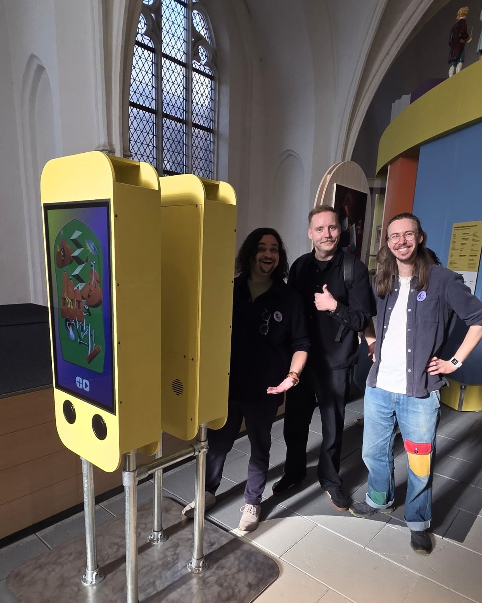
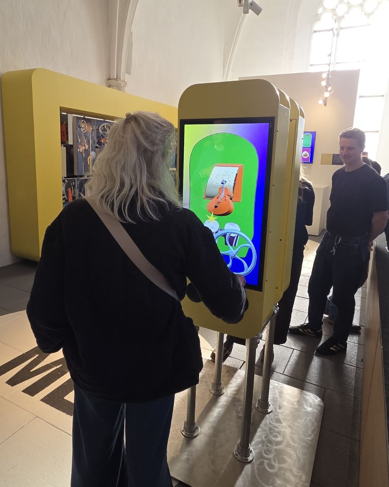
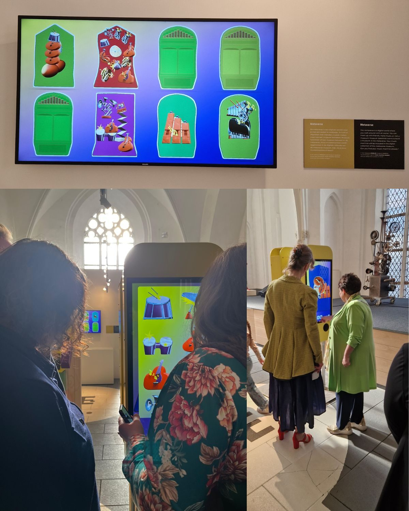
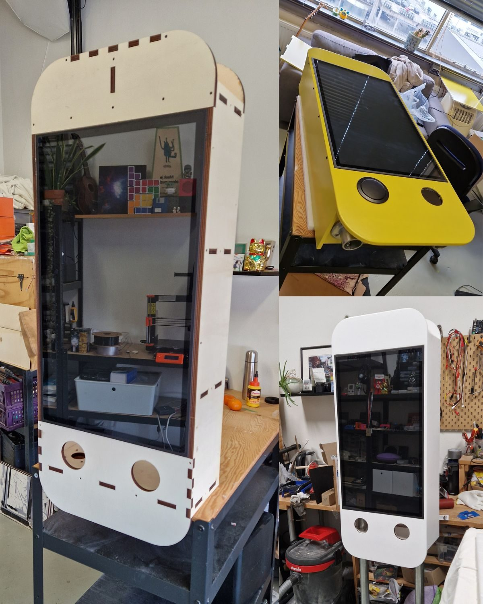

Muziekmachines in Museum Speelklok
Ik durf het bijna niet te zeggen, maar ik vind het een beetje op die bestelschermen van de McDonalds lijken.
Voor Museum Speelklok in Utrecht, het leukste muziekmuseum van Nederland, ontwierp ik vier interactieve McDonalds schermen (dat was precies de bedoeling) waarop bezoekers hun eigen muziekmachine menu samenstellen. Je ontwerpt je uiterlijk, een beetje zoals je een Sims poppetje ontwerpt, sleept de instrumenten erop, en draait vervolgens aan een rad. Dan begint je machine te spelen, ieder instrument met zijn eigen geluid en karakter.
Als je een creatie hebt gemaakt wordt die opgeslagen in het museum en verschijnt op een apart scherm waar de nieuwste ontwerpen voorbij komen. Een soort hall of fame. Zo staat er straks een eeuwenoude Violina naast een muziekmachine van tien minuten oud. Allemaal in één museum.
Het rad
Waar ik stiekem het meest trots op ben is dat rad. Oorspronkelijk zou er gewoon een play knop komen. Functioneel, maar een beetje saai ook. Pas in de studio bij Jaimy, terwijl we de muziek aan het maken waren, kwam ik op het idee. Echte draaiorgels hebben altijd iemand die staat te zwengelen. Zonder handbeweging geen muziek. Wat als bezoekers dat bij deze digitale versie ook moeten doen, en het ritme van je draaien ook de muziek beïnvloedt?
Je bent dan niet meer op een knopje aan het drukken, je kunt echt DJ-en met de muziek. En het mooie is om te zien wat dat doet met mensen. Ze gaan sneller draaien, lachen om hun eigen compositie, zakken door hun knieën. Ze zijn niet meer aan het kijken, ze zijn muziek aan het maken.
Dit was weer zo een project waar ik vrolijk van word. Creatief brainstormen, 3D ontwerpen, lekker met hout en verf aan de slag. Heerlie de peerlie!
Met dank aan
Grote blije dank aan Jaimy Kortenhoff voor de muziek, Tijmen Snelderwaard voor de mooie illustraties en Jef Rouschop, zonder wiens hulp ik als kersverse vader die zijn tijd nog opnieuw moet leren indelen het niet op tijd had gered. En natuurlijk Ebelin Boswinkel en Guusje Thelissen van Museum Speelklok voor het vertrouwen.
Ga hem zeker bekijken als je in de buurt bent. Er is een hele nieuwe verdieping open en die is het meer dan waard.
Zoiets voor jouw museum? Kijk eens bij interactieve installaties.




Projectinformatie
- Opdrachtgever
- Museum Speelklok, Utrecht
- Categorie
- Interactieve installaties
- Projecttype
- Interactieve museuminstallatie met vier touchscreens
- Studio Wotto verzorgde
- Concept, ontwerp, hardware, software en bouw
- Muziek
- Jaimy Kortenhoff
- Illustraties
- Tijmen Snelderwaard
- Toepassing
- Musea en tentoonstellingen
- Gerelateerde diensten
- Interactieve installaties, museuminstallaties op maat, muziektechnologie